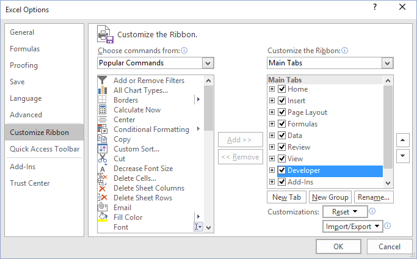
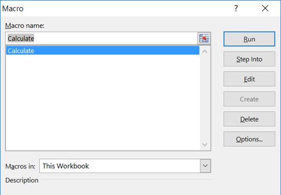

Are you a beginner in the complex world of VBA macros?
Or have you made the first move and it is time to quicken your pace?
Perhaps you need a set of useful macros at hand?
If answear to any of these questions is yes, then you've got to the right place.
On this website, you will find a bunch of codes ready to be pasted in your Excel file.
It is time to Play with VBA!
Start - how to paste a macro in Excel?
First of all, show the Developer tab if it is hidden by default in your Excel. Click the File tab -> Options -> Customize Ribbon. Under Customize the Ribbon and under Main Tabs, select the Developer check box.

Next, click Visual Basic on Developer tab in order to open Visual Basic for Application window. Or press Alt + F11

Click This Workbook -> Insert -> Module
Paste code in Module1
Close Visual Basic for Application window. On Developer tab click Macros. Or press Alt + F8
Choose macro from the list and click Run

Macros:
Calculate
If your calculation option is set to manual it will calculate your selection range.
Sub Calculate()
Selection.Calculate
End Sub
ColumnWidth
Specifies column width for a determined range.
Sub ColumnWidth()
Dim ColWidth As Integer
ColWidth = Application.InputBox("Column width")
With ActiveSheet.Columns("A:E")
.ColumnWidth = ColWidth
End With
End Sub
CountDuplicates
Counts values that appear at least twice in a selected range.
Sub CountDuplicates()
For Each cell In Selection
If Not IsEmpty(cell) Then _
If WorksheetFunction.CountIf(Selection, cell) > 1 Then _
count = count + (1 / WorksheetFunction.CountIf(Selection, cell))
End If
End If
Next cell
MsgBox count
End Sub
CountUnique
Counts values that are unique in a selected range.
Sub CountUnique()
For Each cell In Selection
If Not IsEmpty(cell) Then _
If WorksheetFunction.CountIf(Selection, cell) = 1 Then _
count = count + 1
End If
End If
Next cell
MsgBox count
End Sub
CountValue
Counts any chosen value within a selected range.
Sub CountValue()
Dim i As Variant
i = InputBox("Name value")
MsgBox WorksheetFunction.CountIf(Selection, i)
End Sub
CountWords
The macro counts number of words in a selection.
Sub CountWords()
Dim WordCount As Long
For Each cell In Selection
If IsEmpty(cell) Then
WordCount = WordCount
Else
If cell.HasFormula Then
WordCount = WordCount
Else
If IsNumeric(cell) Then
WordCount = WordCount
Else
WordCount = WordCount + Len(Trim(cell)) - Len(Replace(Trim(cell), " ", "")) + 1
End If
End If
End If
Next cell
MsgBox WordCount & " words found in the selected range."
End Sub
DeleteEmptyColumns
Deletes empty columns for a selected range.
Sub DeleteEmptyColumns()
Dim i As Integer
For i = Selection.Column + Selection.Columns.count - 1 To Selection.Column Step -1
If Application.WorksheetFunction.CountA(Columns(i)) = 0 Then Columns(i).EntireColumn.Delete
Next i
End Sub
DeleteEmptyRows
Deletes empty rows for a selected range.
Sub DeleteEmptyRows()
Dim i As Integer
For i = Selection.Row + Selection.Rows.count - 1 To Selection.Row Step -1
If Application.WorksheetFunction.CountA(Rows(i)) = 0 Then Rows(i).EntireRow.Delete
Next i
End Sub
FillBlankCells
Fills blank cells in a selection with any number or text.
Sub FillBlankCells()
Dim i As Variant
i = InputBox("Fill in blank cells with...")
For Each cell In Selection
If IsEmpty(cell) Then cell.Value = i
Next cell
End Sub
FindOdd
Highlights odd numbers in your selected range.
Sub FindOdd()
For Each cell In Selection
If cell Mod 2 <> 0 Then cell.Interior.ColorIndex = 4 'green
Next cell
End Sub
HighlightCell
Highlighs active cell.
Private Sub Worksheet_SelectionChange(ByVal Target As Range)
Application.ScreenUpdating = False
Cells.Interior.ColorIndex = 0
Target.Interior.ColorIndex = 4 'green
Application.ScreenUpdating = True
End Sub
HighlightDuplicates
Highlights values that appear at least twice in a selected range.
Sub HighlightDuplicates()
For Each cell In Selection
If WorksheetFunction.CountIf(Selection, cell) > 1 Then cell.Interior.ColorIndex = 4 'green
Next cell
End Sub
HighlightEvenRows
Highlights odd row numbers within your selected range.
Sub ColorEvenRows()
For Each cell In Selection
If cell.Row Mod 2 = 0 Then cell.EntireRow.Interior.ColorIndex = 4 'green
Next cell
End Sub
HighlightRowsColumns
Highlighs row and column of an active cell.
Private Sub Worksheet_SelectionChange(ByVal Target As Range)
If Target.Cells.Count > 1 Then Exit Sub
Application.ScreenUpdating = False
Cells.Interior.ColorIndex = 0
With Target
.EntireRow.Interior.ColorIndex = 4 'green
.EntireColumn.Interior.ColorIndex = 4 'green
End With
Application.ScreenUpdating = True
End Sub
HighlightUnique
Highlights values that are unique in a selected range.
Sub HighlightUnique()
For Each cell In Selection
If WorksheetFunction.CountIf(Selection, cell) = 1 Then cell.Interior.ColorIndex = 4 'green color
Next cell
End Sub
InsertRows
Inserts empty rows every second line.
Sub InsertRows()
Dim i, LastRow As Long
LastRow = Cells(Rows.Count, "A").End(xlUp).Row
For i = LastRow To 2 Step -1
Rows(i).Insert
Next i
End Sub
NumberToPercent
Adds % symbol to numbers and converts them into a percentage.
Sub NumberToPercent()
For Each cell In Selection
If Not IsEmpty(cell) Then _
If IsNumeric(cell) Then cell.Value = cell.Value * 0.01
With cell
.NumberFormat = "0.00%"
End With
End If
Next cell
End Sub
RemoveNegative
Converts negative to positive numbers.
Sub RemoveNegative()
For Each cell In Selection
If cell.Value < 0 Then cell.Value = Abs(cell.Value)
Next cell
End Sub
SaveRangeAsPDF
Saves a selected range as PDF.
Sub SaveRangeAsPDF()
Selection.ExportAsFixedFormat Type:=xlTypePDF, OpenAfterPublish:=True
End Sub
UnwrapText
Unwraps text within a selected range.
Sub UnwrapText()
Selection.WrapText = False 'True = wrap
End Sub
AscendingWs
The macro sorts worksheets in an ascending order, from a to z.
Sub AscendingWs()
Dim x As Integer, y As Integer
For x = 1 To Sheets.count
For y = 1 To Sheets.count - 1
If UCase(Sheets(y).Name) > UCase(Sheets(y + 1).Name) Then
Sheets(y).Move after:=Sheets(y + 1)
End If
Next y
Next x
End Sub
Autofit
Autofits columns and rows in the active worksheet.
Sub Autofit()
ActiveSheet.Columns.Autofit
ActiveSheet.Rows.Autofit
End Sub
CalculateWs
If your calculation option is manual it will calculate within your active worksheet.
Sub CalculateWs()
ActiveSheet.Calculate
End Sub
DescWs
Macro sorts worksheets in a descending order, from z to a.
Sub DescendingWs()
Dim x As Integer, y As Integer
For x = 1 To Sheets.count
For y = 1 To Sheets.count - 1
If UCase(Sheets(y).Name) < UCase(Sheets(y + 1).Name) Then
Sheets(y).Move after:=Sheets(y + 1)
End If
Next y
Next x
End Sub
PrintPagesCopies
Prints the active worksheet. You should specify page(s) and number of copies.
Sub PrintPagesCopies()
PageFrom = InputBox("From page")
PageTo = InputBox("To page")
CopiesNr = InputBox("Number of copies")
ActiveSheet.PrintOut From:=PageFrom, To:=PageTo, Copies:=CopiesNr
End Sub
PrintSheet
Prints the active worksheet.
Sub PrintSheet()
ActiveSheet.PrintOut
End Sub
SaveWsAsPDF
Saves the active worksheet as a PDF.
Sub SaveWsAsPDF()
ActiveSheet.ExportAsFixedFormat Type:=xlTypePDF, OpenAfterPublish:=True
End Sub
UnhideColumns
Unhides columns in the active worksheet.
Sub UnhideColumns()
Cells.EntireColumn.Hidden = False
End Sub
UnhideColumnsRows
Unhides columns and rows in the active worksheet.
Sub UnhideColumnsRows()
Cells.EntireColumn.Hidden = False
Cells.EntireRow.Hidden = False
End Sub
UnhideRows
Unhides rows in the active worksheet.
Sub UnhideRows()
Cells.EntireRow.Hidden = False
End Sub
CalculateAuto
Switches to automatic calculation.
Sub CalculateAuto()
Application.Calculation = xlCalculationAutomatic
End Sub
CalculateMan
Switches to manual calculation.
Sub CalculateMan()
Application.Calculation = xlCalculationManual
End Sub
HideEmptyWs
Hides empty worksheets from the workbook.
Sub HideEmptyWs()
Dim Ws As Worksheet
For Each Ws In ActiveWorkbook.Worksheets
If Application.CountA(Ws.Cells) = 0 Then Ws.Visible = False
Next Ws
End Sub
HighlightNamed
Highlights named ranges in your workbook.
Sub HighlightNamed()
Dim RngNm As Name
Dim rng As Range
On Error Resume Next
For Each RngNm In Application.ActiveWorkbook.Names
Set rng = RngNm.RefersToRange
rng.Interior.ColorIndex = 4 'green
Next
End Sub
PasswordWb
Secures file with a password.
Sub PasswordWb()
On Error GoTo ErrorHandler:
Dim pass As Variant
pass = InputBox("Please enter the password")
ActiveWorkbook.SaveAs Password:=pass 'Filename:="Pelna_Nazwa_Pliku",
Exit Sub
ErrorHandler:
MsgBox "Failed to set password for workbook"
End Sub
ProtectWb
Protects the workbook from structure changes.
Sub ProtectWb()
On Error GoTo ErrorHandler:
Dim pass As Variant
pass = InputBox("Please enter the password")
ActiveWorkbook.Protect Structure:=True, Windows:=True, Password:=pass
MsgBox "Workbook protected"
Exit Sub
ErrorHandler:
MsgBox "Failed to protect workbook"
End Sub
RemoveEmptyWs
Removes empty worksheets from the workbook.
Sub RemoveEmptyWs()
Application.DisplayAlerts = False
Dim Ws As Worksheet
For Each Ws In ActiveWorkbook.Worksheets
If Application.CountA(Ws.Cells) = 0 Then Ws.Delete
Next Ws
Application.DisplayAlerts = True
End Sub
RemoveNamed
Removes named ranges from your workbook.
Sub RemoveNamed()
Dim RngNm As Name
Dim rng As Range
On Error Resume Next
For Each RngNm In Application.ActiveWorkbook.Names
RngNm.Delete
Next
End Sub
UnhideWs
Unhides hidden worksheets.
Sub UnhideWs()
Dim Ws As Worksheet
For Each Ws In ActiveWorkbook.Worksheets
Ws.Visible = True
Next Ws
End Sub
CloseAllWb
Closes all open workbooks at once.
Sub CloseAllWb()
Dim wb As Workbook
For Each wb In Workbooks
wb.Close savechanges:=False 'or True if you want changes saved
Next wb
End Sub
CloseExcel
Closes the Excel application.
Sub CloseExcel()
Application.DisplayAlerts = False
ThisWorkbook.Save
Application.DisplayAlerts = True
Application.Quit
End Sub
CloseOtherWb
Closes all open workbooks at once, apart from the active workbook.
Sub CloseOtherWb()
Dim wb As Workbook
For Each wb In Workbooks
If wb.Name <> ThisWorkbook.Name Then
wb.Close savechanges:=False 'or True if you want changes saved
End If
Next wb
End Sub
ConvertToRoman
Converts arabic numbers to roman numbers.
Sub ConvertToRoman()
For Each Cell In Selection
If IsNumeric(Cell) = True Then Cell.Value = Application.WorksheetFunction.Roman(Cell.Value, 0) 'max 3999
Next Cell
End Sub
CountTime
Counts time spent in the workbook.
Public Start As Double
Public Finish As String
Private Sub Workbook_BeforeClose(Cancel As Boolean)
Finish = Format((Timer - Start) / 86400, "hh:mm:ss")
MsgBox "Time spent on This workbook " & Finish, vbInformation
End Sub
Private Sub Workbook_Open()
Start = Timer
End Sub
FirstLastDayMonth
The macro shows the first and the last day of the month in the open file.
Sub Auto_Open()
Call FirstDayMonth
Call LastDayMonth
End Sub
Sub FirstDayMonth()
Dim FirstDay As Date
FirstDay = DateSerial(Year(Date), Month(Date), 1)
MsgBox FirstDay
End Sub
Sub LastDayMonth()
Dim LastDay As Date
LastDay = DateSerial(Year(Date), Month(Date) + 1, 0)
MsgBox LastDay
End Sub
LastAuthorSaveTime
The macro identifies the last author and save date.
Sub LastAuthorSaveTime()
Dim FileAuthor As Object
Set FileAuthor = ThisWorkbook.BuiltinDocumentProperties("Last Author")
Dim FileDate As Object
Set FileDate = ThisWorkbook.BuiltinDocumentProperties("Last Save Time")
MsgBox "Last Updated By: " & FileAuthor & " on " & FileDate
End Sub
Reminder
The macro activates on a pre-determined weekday to remind you about an event.
Private Sub Workbook_Open()
If Weekday(Now()) = vbWednesday Then
MsgBox "Today is Wednesday. Remember about..."
End If
End Sub
RestrictAccess
Allows or restricts access depending on the system user name.
Private Sub Workbook_Open()
If Application.UserName = "admin" Then
MsgBox "Hello " & Application.UserName
Else
MsgBox "You are not entitled to use this file"
Application.Quit
End If
End Sub
SaveFileCopy
Creates a copy of your file. The copy is created in the location of your original file. Its name will contain today's date.
Sub SaveFileCopy()
ActiveWorkbook.SaveCopyAs ActiveWorkbook.Path & "\" & Date & " Copy of " & ActiveWorkbook.Name
End Sub
StartCalculator
Opens a calculator from Excel level.
Sub StartCalculator()
Application.ActivateMicrosoftApp Index:=0
End Sub
StartMsWord
Opens MS Word from Excel level.
Sub StartMsWord()
Application.ActivateMicrosoftApp xlMicrosoftWord 'or Index:=1
End Sub
TimeCountMin
Counts time in minutes.
Sub TimeCountMin()
Dim Start As Double
Dim Finish As String
Start = Timer
'Macro starts
For Each cell In Selection
If IsEmpty(cell) = True Then
cell.Value = 1
End If
Next cell
'Maro ends
Finish = Format((Timer - Start) / 86400, "hh:mm:ss")
MsgBox Finish & " minutes", vbInformation
End Sub
TimeCountSec
Counts time in seconds.
Sub TimeCountSec()
Dim Start As Double
Dim Finish As Double
Start = Timer
'Macro starts
For Each cell In Selection
If IsEmpty(cell) = True Then
cell.Value = 1
End If
Next cell
'Maro ends
Finish = Round(Timer - Start, 0)
MsgBox Finish & " seconds", vbInformation
End Sub